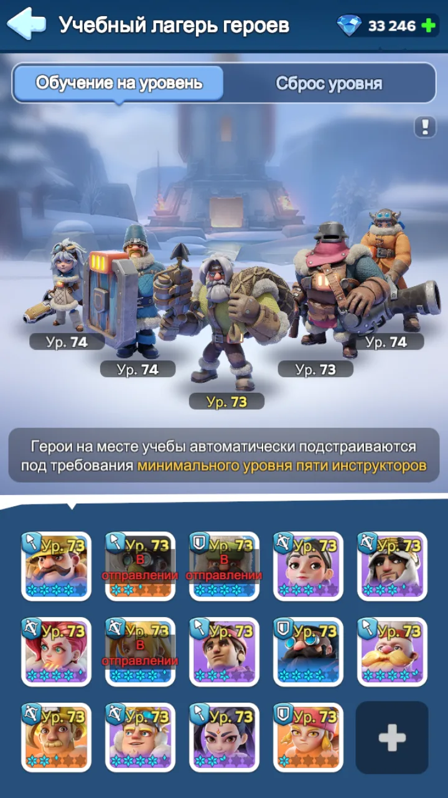
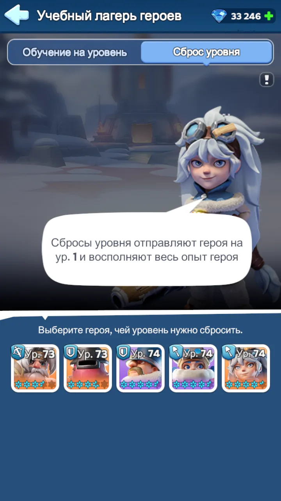

Герои
Кого использовать, как читать роли и куда вкладывать ресурсы.
Содержание
Герои: кого и для чего использовать
В «Белой Мгле: Выживание» нельзя оценивать героя только по редкости или общей мощности. Один герой может быть отличным на Арене, но слабее в рейдах, другой может оставаться полезным много поколений благодаря одному конкретному навыку.
Два типа навыков
У героев есть две разные группы навыков:
Исследование используется там, где герои сражаются сами: в Исследовании и на Арене.
Экспедиция используется, когда герои ведут войска: в обычных походах, PvP, рейдах, гарнизоне, охоте на зверей и других боях войск.
Тип героя
Каждый боевой герой относится к одному из трёх типов:
Пехота сильнее против копейщиков, копейщики против стрелков, стрелки против пехоты.
Но один только тип войск не определяет ценность героя. Навыки, звёзды, поколение и конкретный режим боя могут быть важнее.
Не прокачивай всех подряд
Лучше полностью развивать нескольких нужных героев, чем распределять фрагменты и материалы между всем списком.
Особенно осторожно расходуй универсальные мифические фрагменты. Новые поколения героев появляются по мере развития государства, поэтому заранее оставлять запас часто полезнее, чем вкладывать всё в первого доступного легендарного героя.
🎓 Учебный лагерь
Учебный лагерь позволяет использовать героев высокого уровня без необходимости вручную прокачивать каждого из них опытом.
В системе есть пять героев-инструкторов. Герои, размещённые на местах учёбы, автоматически подстраиваются под минимальный уровень этих пяти инструкторов.

Как определяется уровень лагеря
Система смотрит на уровни пяти инструкторов и берёт самый низкий из них.
74 / 74 / 74 / 73 / 73 → уровень Учебного лагеря будет 73.
Если одного из самых слабых инструкторов поднять выше, уровень лагеря изменится только тогда, когда поднимется минимальный уровень среди всей пятёрки.
Что происходит с героем на месте учёбы
Если собственный уровень героя ниже уровня лагеря, он временно получает уровень Учебного лагеря.
реальный уровень героя 35 → уровень лагеря 73 → на месте учёбы герой используется как 73 уровня.
При этом лагерь повышает именно уровень героя. Он не добавляет звёзды, не прокачивает навыки и не улучшает снаряжение.
Если собственный уровень героя уже выше уровня лагеря, герой не понижается и сохраняет свой уровень.
Если убрать героя из лагеря
Герой возвращается к своему настоящему уровню, который был прокачан вручную.
35 → в лагере 73 → убрали из лагеря → снова 35.
Сброс уровня

Во вкладке «Сброс уровня» можно вернуть героя на 1 уровень. Потраченный на его уровень опыт героя возвращается, поэтому его можно перераспределить на других героев.
Как выгоднее расходовать опыт героя
Не стоит прокачивать опытом всех героев подряд. Выгоднее концентрировать опыт на героях, которые формируют пятёрку инструкторов, а остальных размещать на местах учёбы.
прокачиваем основных героев → растёт минимальный уровень пяти инструкторов → растёт уровень лагеря → остальные герои автоматически подтягиваются.
Главное
- уровень лагеря задаёт самый низкий уровень среди пяти инструкторов;
- герои на местах учёбы получают этот уровень временно;
- звёзды, навыки и снаряжение лагерь не повышает;
- после удаления из лагеря герой возвращается к своему реальному уровню;
- сброс уровня возвращает героя на 1 уровень и возвращает потраченный опыт героя.
Поколения героев
Набор доступных героев зависит от возраста государства. Новые поколения постепенно добавляют новых легендарных героев Пехоты, Копейщиков и Стрелков.
Более новое поколение обычно имеет более высокие характеристики, однако это не означает, что каждый старый герой сразу становится бесполезным.
Некоторые эпические герои сохраняют ценность очень долго благодаря специальным навыкам Экспедиции.
Герои в начале игры
Для обычных боёв с войсками хорошей ранней основой являются Сергей, Молли и Бахити.
Джесси особенно полезна в рейдах благодаря навыку, увеличивающему наносимый войсками урон.
Джассер также остаётся полезным участником рейдов.
Джина ценна прежде всего для охоты на зверей и полярных ужасов: её навыки уменьшают расход энергии губернатора и ускоряют походы на зверей.
Медведь и присоединение к рейду
Когда ты создаёшь рейд, учитываются навыки всех трёх твоих героев.
Когда ты присоединяешься к чужому рейду, особенно важен первый герой слева: в общий набор попадает его первый навык Экспедиции.
Из навыков участников система выбирает только несколько лучших, обычно четыре, причём уровень навыка имеет значение.
Для ранних поколений хорошими примерами являются Джесси, Джассер и Джеронимо. По мере появления новых поколений список подходящих героев расширяется.
Арена
На Арене используются навыки Освоения, а не Экспедиции.
Здесь важны состав из пяти героев, их расположение, классы, контроль, урон и выживаемость. Поэтому герой, великолепный для рейда или Медведя, не обязательно будет таким же сильным на Арене.
Как правильно сравнивать героев
Сравнивай героев при похожем уровне развития: звёздах, уровне навыков, снаряжении и эксклюзивном снаряжении.
Новая легендарка с одной звездой не обязательно будет полезнее полностью развитого старого героя.